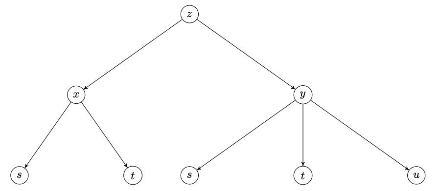

Section 4.3 La règle de dérivation en chaîne
¶Outils 4.3.1.
Calculatrice à règle de dérivation en chaîne pour une fonction \(z\) de deux variables \(x,y\) qui dépendent chacune de \(t\) :
Application GeoGebra illustrant graphiquement la règle de dérivation en chaîne pour une fonction de deux variables qui dépendent chacune du temps.
Objectifs
-
Connaître la règle de dérivation en chaîne pour une fonction différentiable de deux variables \(z(x,y)\) évaluée en deux fonctions dérivables d'une seule variable \(x(t)\) et \(y(t)\) :
\begin{equation*} \frac{\mathrm{d}z}{\mathrm{d}t}=\frac{\partial z}{\partial x}\cdot\frac{\mathrm{d}x}{\mathrm{d}t}+\frac{\partial z}{\partial y}\cdot\frac{\mathrm{d}y}{\mathrm{d}t}. \end{equation*} -
Savoir représenter la dépendance des variables entre elles par un arbre et savoir utiliser un tel arbre pour formuler la règle de dérivation chaîne désirée. Par exemple, si
\begin{equation*} z=x^2+3xy^3\quad\text{où}\quad x=r+s-5t\quad\text{et}\quad y=2s+t \end{equation*}et qu'on cherche à déterminer \(\dfrac{\partial z}{\partial s}\text{,}\) on dessine l'arbre
et on en déduit que\begin{equation*} \frac{\partial z}{\partial s}=\frac{\partial z}{\partial x}\cdot\frac{\partial x}{\partial s}+\frac{\partial z}{\partial y}\cdot\frac{\partial y}{\partial s}. \end{equation*} Savoir calculer des dérivées partielles à l'aide de la règle de dérivation en chaîne.
Savoir exprimer le taux de variation d'une fonction dépendant de plusieurs variables en fonction des taux de variations de chacune de ces variables.
Pouvoir vérifier qu'une fonction donnée est solution d'une équation aux dérivées partielles (EDP) telle que l'équation des ondes.
Exercice 4.3.1.
Un pétrolier vient de faire naufrage au large de la Nouvelle-Écosse et malheureusement sa cargaison se répand en formant une gigantesque nappe circulaire.
Sachant que le rayon de la nappe est désormais de \(3\) km et qu'il augmente à la vitesse de \(150\,\mathrm{m}/\mathrm{h}\text{,}\) quel est le taux de variation de l'aire de la nappe à ce moment-là?
Exprimez votre réponse en \(\mathrm{km}^2/\mathrm{h}\) et arrondissez à deux décimales.
Notez \(r\) le rayon de la nappe en \(\mathrm{km}\) et
son aire en \(\mathrm{km}^2\text{,}\) puis utilisez la règle de dérivation en chaîne pour déterminer la valeur de
lorsque
On trouve
Notons \(r\) le rayon de la nappe en \(\mathrm{km}\) et
son aire en \(\mathrm{km}^2\text{,}\) de sorte que
par la règle de dérivation en chaîne.
Selon l'énoncé, on est rendu à un moment de la catastrophe où
On a donc
Exercice 4.3.2.
On s'intéresse aux variables \(x,y,z,t\) qui dépendent les unes des autres comme suit :
Placez ces variables dans un arbre de dépendance.
-
Calculez \(\frac{\mathrm{d}z}{\mathrm{d}t}\) à l'aide de la règle de dérivation en chaîne
\begin{equation*} \frac{\mathrm{d}z}{\mathrm{d}t}=\frac{\partial z}{\partial x}\cdot\frac{\mathrm{d}x}{\mathrm{d}t}+\frac{\partial z}{\partial y}\cdot\frac{\mathrm{d}y}{\mathrm{d}t}. \end{equation*} Vérifiez qu'on obtient la même réponse en remplaçant d'abord \(x\) et \(y\) par \(\sin(2t)\) et \(\cos(t)\) dans l'expression \(z=x^2+\frac{y^2}{9}\text{.}\)
-
Combien valent
\begin{equation*} \dfrac{\mathrm{d}x}{\mathrm{d}t},\quad\dfrac{\mathrm{d}y}{\mathrm{d}t}\quad\text{et}\quad\dfrac{\mathrm{d}z}{\mathrm{d}t} \end{equation*}lorsque \(t=0\text{?}\)
-
Supposez que les variables \(x,y,z\) donnent les coordonnées en mètres d'un point se déplaçant sur la surface d'équation \(z=x^2+\frac{y^2}{9}\) en fonction du temps \(t\) exprimé en secondes.
Interprétez physiquement les valeurs trouvées à la question précédente.
Inspirez-vous de l'arbre donné en exemple au deuxième point des objectifs.
Appliquez la formule.
Après substitution, on obtient une fonction d'une seule variable qu'il suffit de dériver comme on a appris le faire en cours de calcul différentiel.
Remplacez \(t\) par \(0\text{.}\)
La dérivée de la position par rapport au temps donne la vitesse instantanée. Notez que vous pouvez visualiser le déplacement de ce point en fonction du temps grâce à cette application GeoGebra.
On obtient l'arbre de dépendance suivant :
-
La règle de dérivation en chaîne donne
\begin{equation*} \frac{\mathrm{d}z}{\mathrm{d}t}=4\sin(2t)\cos(2t)-\frac{2}{9}\sin(t)\cos(t). \end{equation*} -
Après substitution, on obtient
\begin{equation*} z=\sin^2(2t)+\frac{1}{9}\cos^2(t) \end{equation*}d'où
\begin{equation*} \frac{\mathrm{d}z}{\mathrm{d}t}=4\sin(2t)\cos(2t)-\frac{2}{9}\sin(t)\cos(t) \end{equation*}comme à la question précédente.
-
Lorsque \(t=0\text{,}\) on obtient
\begin{equation*} \frac{\mathrm{dx}}{\mathrm{d}t}\Bigg\rvert_{t=0}=2,\quad\frac{\mathrm{dy}}{\mathrm{d}t}\Bigg\rvert_{t=0}=0\quad\text{et}\quad\frac{\mathrm{d}z}{\mathrm{d}t}\Bigg\rvert_{t=0}=0. \end{equation*} -
Au temps \(t=0\,\mathrm{s}\text{,}\) le point se situe à la position
\begin{equation*} (x,y,z)=(0,1,1/9). \end{equation*}Ses vitesses horizontales selon les axes des \(x\) et des \(y\) valent respectivement
\begin{equation*} \frac{\mathrm{dx}}{\mathrm{d}t}\Bigg\rvert_{t=0}=2\,\mathrm{m}/\mathrm{s}\quad\text{et}\quad\frac{\mathrm{dy}}{\mathrm{d}t}\Bigg\rvert_{t=0}=0\,\mathrm{m}/\mathrm{s} \end{equation*}tandis que sa vitesse verticale vaut
\begin{equation*} \frac{\mathrm{dz}}{\mathrm{d}t}\Bigg\rvert_{t=0}=0\,\mathrm{m}/\mathrm{s}. \end{equation*}
-
Au premier niveau, \(z\) dépend de \(x\) et de \(y\text{,}\) ce qui donne deux branches issues du sommet \(z\text{.}\)
Au deuxième niveau, on a une seule branche de \(x\) (resp. \(y\)) vers \(t\text{,}\) car \(x\) (resp. \(y\)) ne dépend que de \(t\text{.}\)
On obtient donc l'arbre de dépendance suivant :
-
La règle de dérivation en chaîne donne
\begin{align*} \frac{\mathrm{d}z}{\mathrm{d}t}&=\frac{\partial z}{\partial x}\cdot\frac{\mathrm{d}x}{\mathrm{d}t}+\frac{\partial z}{\partial y}\cdot\frac{\mathrm{d}y}{\mathrm{d}t}\\ &=2x\cdot\frac{\mathrm{d}x}{\mathrm{d}t}+\frac{2y}{9}\cdot\frac{\mathrm{d}y}{\mathrm{d}t}\\ &=2x\cdot(2\cos(2t))+\frac{2y}{9}\cdot(-\sin(t))\\ &=2\sin(2t)\cdot(2\cos(2t))+\frac{2\cos(t)}{9}\cdot(-\sin(t))\\ &=4\sin(2t)\cos(2t)-\frac{2}{9}\sin(t)\cos(t). \end{align*} -
Après substitution, on obtient
\begin{align*} z&=x^2+\frac{y^2}{9}\\ &=(\sin(2t))^2+\frac{(\cos(t))^2}{9}\\ &=\sin^2(2t)+\frac{1}{9}\cos^2(t). \end{align*}Donc on a
\begin{align*} \frac{\mathrm{d}z}{\mathrm{d}t}&=\frac{\mathrm{d}}{\mathrm{d}t}\left(\sin^2(2t)+\frac{1}{9}\cos^2(t)\right)\\ &=2\sin(2t)\cdot\cos(2t)\cdot 2+\frac{1}{9}\cdot 2\cos(t)\cdot(-\sin(t))\\ &=4\sin(2t)\cos(2t)-\frac{2}{9}\sin(t)\cos(t) \end{align*}comme à la question précédente.
-
Lorsque \(t=0\text{,}\) on a
et\begin{align*} \frac{\mathrm{dx}}{\mathrm{d}t}\Bigg\rvert_{t=0}&=\frac{\mathrm{d}}{\mathrm{d}t}\left(\sin(2t)\right)\Bigg\rvert_{t=0}\\ &=2\cos(2t)\Bigg\rvert_{t=0}\\ &=2\cos(0)\\ &=2\cdot 1\\ &=2 \end{align*}\begin{align*} \frac{\mathrm{dy}}{\mathrm{d}t}\Bigg\rvert_{t=0}&=\frac{\mathrm{d}}{\mathrm{d}t}\left(\cos(t)\right)\Bigg\rvert_{t=0}\\ &=-\sin(t)\Bigg\rvert_{t=0}\\ &=-\sin(0)\\ &=-0\\ &=0 \end{align*}donc\begin{align*} x\Bigg\rvert_{t=0}&=\sin(2t)\Bigg\rvert_{t=0}\\ &=\sin(0)\\ &=0 \end{align*}\begin{align*} y\Bigg\rvert_{t=0}&=\cos(t)\Bigg\rvert_{t=0}\\ &=\cos(0)\\ &=1 \end{align*}\begin{align*} \frac{\mathrm{d}z}{\mathrm{d}t}\Bigg\rvert_{t=0}&=\left(\frac{\partial z}{\partial x}\cdot\frac{\mathrm{d}x}{\mathrm{d}t}+\frac{\partial z}{\partial y}\cdot\frac{\mathrm{d}y}{\mathrm{d}t}\right)\Bigg\rvert_{t=0}\\ &=\left(2x\cdot\frac{\mathrm{d}x}{\mathrm{d}t}+\frac{2y}{9}\cdot\frac{\mathrm{d}y}{\mathrm{d}t}\right)\Bigg\rvert_{t=0}\\ &=2\cdot x\Bigg\rvert_{t=0}\cdot\frac{\mathrm{d}x}{\mathrm{d}t}\Bigg\rvert_{t=0}+\frac{2}{9}\cdot y\Bigg\rvert_{t=0}\cdot\frac{\mathrm{d}y}{\mathrm{d}t}\Bigg\rvert_{t=0}\\ &=2\cdot 0\cdot 2+\frac{2}{9}\cdot 1\cdot 0\\ &=0. \end{align*} -
Au temps \(t=0\,\mathrm{s}\text{,}\) le point se situe à la position
\begin{equation*} (x,y,z)=(0,1,1/9). \end{equation*}Ses vitesses horizontales selon les axes des \(x\) et des \(y\) valent respectivement
\begin{equation*} \frac{\mathrm{dx}}{\mathrm{d}t}\Bigg\rvert_{t=0}=2\,\mathrm{m}/\mathrm{s}\quad\text{et}\quad\frac{\mathrm{dy}}{\mathrm{d}t}\Bigg\rvert_{t=0}=0\,\mathrm{m}/\mathrm{s} \end{equation*}tandis que sa vitesse verticale vaut
\begin{equation*} \frac{\mathrm{dz}}{\mathrm{d}t}\Bigg\rvert_{t=0}=0\,\mathrm{m}/\mathrm{s}. \end{equation*}
Exercice 4.3.3.
Trouvez la dérivée de
par rapport à \(x\text{.}\)
En utilisant la dérivation logarithmique.
-
En utilisant la règle de dérivation en chaîne après avoir introduit les variables
\begin{equation*} u=\sin x\quad\text{et}\quad v=x^2. \end{equation*}
D'une façon ou d'une autre, on obtient :
-
Pour commencer, on applique le logarithme naturel :
\begin{align*} \ln y&=\ln\left((\sin x)^{x^2}\right)\\ &=x^2\ln(\sin x). \end{align*} -
Ensuite, on dérive par rapport à \(x\) :
\begin{align*} \frac{1}{y}\cdot\frac{\mathrm{d}y}{\mathrm{d}x}&=\frac{\mathrm{d}}{\mathrm{d}x}(\ln y)\\ &=\frac{\mathrm{d}}{\mathrm{d}x}(x^2\cdot\ln(\sin x))\\ &=\frac{\mathrm{d}}{\mathrm{d}x}(x^2)\cdot\ln(\sin x))+x^2\cdot\frac{\mathrm{d}}{\mathrm{d}x}(\ln(\sin x))\\ &=2x\cdot\ln(\sin x))+x^2\cdot\frac{1}{\sin x}\cdot\cos x\\ &=2x\ln(\sin x))+x^2\cot x. \end{align*} -
Enfin, on multiplie par \(y\) :
\begin{align*} \frac{\mathrm{d}y}{\mathrm{d}x}&=y\cdot\frac{\mathrm{d}}{\mathrm{d}x}(\ln y)\\ &=y\cdot(2x\ln(\sin x))+x^2\cot x)\\ &=(\sin x)^{x^2}(2x\ln(\sin x))+x^2\cot x). \end{align*}
-
-
Les variables \(x,y,u,v\) sont liées comme suit :
\begin{equation*} y=u^v\quad\text{avec}\quad u=\sin x\quad\text{et}\quad v=x^2. \end{equation*}Cela donne l'arbre de dépendance suivant :
Par la règle de dérivation en chaîne, on a donc\begin{align*} \frac{\mathrm{d}y}{\mathrm{d}x}&=\frac{\partial y}{\partial u}\cdot\frac{\mathrm{d}u}{\mathrm{d}x}+\frac{\partial y}{\partial v}\cdot\frac{\mathrm{d}v}{\mathrm{d}x}\\ &=vu^{v-1}\cdot\cos x+u^v\ln u\cdot 2x\\ &=x^2(\sin x)^{x^2-1}\cdot\cos x+(\sin x)^{x^2}\ln(\sin x)\cdot 2x\\ &=(\sin x)^{x^2}(x^2\cot x+2x\ln(\sin x)) \end{align*}conformément au calcul effectué plus haut par dérivation logarithmique.
Exercice 4.3.4.
Calculez les dérivées indiquées.
\(\dfrac{dz}{dt}\) lorsque \(t=\dfrac{\pi}{2}\text{,}\) si \(\displaystyle z=e^{xy^2}\) avec \(x=t\cos t\) et \(y=t\sin t\text{.}\)
\(\dfrac{\partial z}{\partial v}\) lorsque \((u,v)=(3,-2)\text{,}\) si \(z=\tan\left(\dfrac{x}{y}\right)\) avec \(x=2u+3v\) et \(y=3u-2v\text{.}\)
\(\dfrac{\partial z}{\partial t}\) lorsque \(r=1\text{,}\) \(s=0\) et \(t=1\text{,}\) si \(z=w\arctan(uv)\) avec \(u=r+s\text{,}\) \(v=s+t\) et \(w=t+r\text{.}\)
Pour chaque calcul, commencez par dresser un arbre de dépendance.
\(-\dfrac{\pi^3}{8}\)
\(\dfrac{3}{13}\)
\(1+\dfrac{\pi}{4}\)
-
Les variables sont liées de la façon suivante :
Par la règle de dérivation en chaîne, on a donc\begin{align*} \frac{\mathrm{d}z}{\mathrm{d}t}&=\frac{\partial z}{\partial x}\cdot\frac{\mathrm{d}x}{\mathrm{d}t}+\frac{\partial z}{\partial y}\cdot\frac{\mathrm{d}y}{\mathrm{d}t}\\ &=\frac{\partial}{\partial x}\left(e^{xy^2}\right)\cdot\frac{\mathrm{d}}{\mathrm{d}t}(t\cos t)+\frac{\partial}{\partial y}\left(e^{xy^2}\right)\cdot\frac{\mathrm{d}}{\mathrm{d}t}(t\sin t)\\ &=e^{xy^2}y^2\cdot(\cos t+t(-\sin t))+e^{xy^2}2xy\cdot(\sin t+t\cos t)\\ &=ye^{xy^2}\left(y(\cos t-t\sin t)+2x(\sin t+t\cos t)\right). \end{align*}Lorsque \(t=\dfrac{\pi}{2}\text{,}\) on a
\begin{equation*} x=\frac{\pi}{2}\cdot\underbrace{\cos\left(\frac{\pi}{2}\right)}_{=0}=0\quad\text{et}\quad y=\frac{\pi}{2}\cdot\underbrace{\sin\left(\frac{\pi}{2}\right)}_{=1}=\frac{\pi}{2} \end{equation*}donc
\begin{align*} \frac{\mathrm{d}z}{\mathrm{d}t}\Bigg\rvert_{t=\frac{\pi}{2}}&=\frac{\pi}{2}\cdot\underbrace{e^{0}}_{=1}\cdot\left(\frac{\pi}{2}\cdot\left(\underbrace{\cos\left(\frac{\pi}{2}\right)}_{=0}-\frac{\pi}{2}\cdot\underbrace{\sin\left(\frac{\pi}{2}\right)}_{=1}\right)+\cancel{2\cdot 0\cdot\ldots}\right)\\ &=-\frac{\pi^3}{8}. \end{align*} -
Les variables sont liées de la façon suivante :
Par la règle de dérivation en chaîne, on a donc\begin{align*} \frac{\partial z}{\partial v}&=\frac{\partial z}{\partial x}\cdot\frac{\partial x}{\partial v}+\frac{\partial z}{\partial y}\cdot\frac{\partial y}{\partial v}\\ &=\frac{\partial}{\partial x}\left(\tan\left(\frac{x}{y}\right)\right)\cdot\frac{\partial}{\partial v}(2u+3v)+\frac{\partial}{\partial y}\left(\tan\left(\frac{x}{y}\right)\right)\cdot\frac{\partial}{\partial v}(3u-2v)\\ &=\sec^2\left(\frac{x}{y}\right)\cdot\frac{1}{y}\cdot 3+\sec^2\left(\frac{x}{y}\right)\cdot\left(-\frac{x}{y^2}\right)\cdot(-2)\\ &=\sec^2\left(\frac{x}{y}\right)\cdot\frac{3y+2x}{y^2}. \end{align*}Lorsque \((u,v)=(3,-2)\text{,}\) on a
\begin{equation*} x=2\cdot 3+3\cdot(-2)=0\quad\text{et}\quad y=3\cdot 3-2\cdot(-2)=13 \end{equation*}donc
\begin{align*} \frac{\partial z}{\partial v}\Bigg\rvert_{(u,v)=(3,-2)}&=(\underbrace{\sec(0)}_{=1})^2\cdot\frac{3\cdot 13+2\cdot 0}{13^2}\\ &=\frac{3}{13}. \end{align*} -
Les variables sont liées de la façon suivante :
Par la règle de dérivation en chaîne, on a donc\begin{align*} \frac{\partial z}{\partial t}&=\frac{\partial z}{\partial v}\cdot\frac{\partial v}{\partial t}+\frac{\partial z}{\partial w}\cdot\frac{\partial w}{\partial t}\\ &=\frac{\partial}{\partial v}\left(w\arctan(uv)\right)\cdot\frac{\partial}{\partial t}(s+t)+\frac{\partial}{\partial w}\left(w\arctan(uv)\right)\cdot\frac{\partial}{\partial t}(t+r)\\ &=w\cdot\frac{1}{1+(uv)^2}\cdot u\cdot 1+\arctan(uv)\cdot 1\\ &=\frac{uw}{1+u^2v^2}+\arctan(uv). \end{align*}Lorsque \(r=1\text{,}\) \(s=0\) et \(t=1\text{,}\) on a
\begin{equation*} u=1+0=1,\quad v=0+1=1\quad\text{et}\quad w=1+1=2 \end{equation*}donc
\begin{align*} \frac{\partial z}{\partial t}\Bigg\rvert_{(r,s,t)=(1,0,1)}&=\frac{1\cdot 2}{1+1^21^2}+\arctan(1\cdot 1)\\ &=\frac{2}{2}+\arctan(1)\\ &=1+\frac{\pi}{4}. \end{align*}
Exercice 4.3.5.
On suppose que \(f(x,y)\) est une fonction différentiable de \(x\) et de \(y\text{,}\) et on pose
Utilisez le tableau de valeurs suivant
pour calculer les dérivées partielles
Introduisez la variable
où
Puis dressez l'arbre de dépendance correspondant et appliquez la règle de dérivation en chaîne au calcul de
On trouve
On s'intéresse aux dérivées partielles de la variable
où
On a l'arbre de dépendance suivant :
Avant d'évaluer, notons que
si bien que seules les valeurs
nous seront utiles.
-
D'une part, la règle de dérivation en chaîne entraîne
\begin{align*} g_u&=\frac{\partial z}{\partial u}\\ &=\frac{\partial z}{\partial x}\cdot\frac{\partial x}{\partial u}+\frac{\partial z}{\partial y}\cdot\frac{\partial y}{\partial u}\\ &=f_x\cdot\frac{\partial}{\partial u}(5u+3v-1)+f_y\cdot\frac{\partial}{\partial u}(8u-6v+3)\\ &=f_x\cdot 5+f_y\cdot 8 \end{align*}d'où
\begin{align*} g_u(0,0)&=f_x(-1,3)\cdot 5+f_y(-1,3)\cdot 8\\ &=(-5)\cdot 5+4\cdot 8\\ &=7. \end{align*} -
D'autre part, la règle de dérivation en chaîne entraîne
\begin{align*} g_v&=\frac{\partial z}{\partial v}\\ &=\frac{\partial z}{\partial x}\cdot\frac{\partial x}{\partial v}+\frac{\partial z}{\partial y}\cdot\frac{\partial y}{\partial v}\\ &=f_x\cdot\frac{\partial}{\partial v}(5u+3v-1)+f_y\cdot\frac{\partial}{\partial v}(8u-6v+3)\\ &=f_x\cdot 3+f_y\cdot(-6) \end{align*}d'où
\begin{align*} g_v(0,0)&=f_x(-1,3)\cdot 3+f_y(-1,3)\cdot(-6)\\ &=(-5)\cdot 3+4\cdot(-6)\\ &=-39. \end{align*}
Exercice 4.3.6.
Si \(z=f(x,y)\) est une fonction dont les dérivées partielles d'ordre deux sont continues et si
exprimez
en fonction des dérivées partielles de \(z\) par rapport à \(x\) et à \(y\text{.}\)
Pour la première dérivée, utilisez la règle de dérivation en chaîne.
Pour la seconde, vous pourrez sauver du temps en pensant à appliquer la première formule trouvée aux fonctions \(\frac{\partial z}{\partial x}\) et \(\frac{\partial z}{\partial y}\text{,}\) à la place de la fonction \(z\text{.}\)
On trouve
et
-
Voici l'arbre de dépendance des variables :
Par la règle de dérivation en chaîne, on a donc\begin{align*} \frac{\partial z}{\partial r}&=\frac{\partial z}{\partial x}\cdot\frac{\partial x}{\partial r}+\frac{\partial z}{\partial y}\cdot\frac{\partial y}{\partial r}\\ &=\frac{\partial z}{\partial x}\cdot\frac{\partial}{\partial r}(r^2+s^2)+\frac{\partial z}{\partial y}\cdot\frac{\partial}{\partial r}(2rs)\\ &=\frac{\partial z}{\partial x}\cdot 2r+\frac{\partial z}{\partial y}\cdot 2s\\ &=2r\frac{\partial z}{\partial x}+2s\frac{\partial z}{\partial y}. \end{align*} -
Partant du calcul précédent, on obtient
\begin{align*} \frac{\partial^2z}{\partial r^2}&=\frac{\partial}{\partial r}\left(\frac{\partial z}{\partial r}\right)\\ &=\frac{\partial}{\partial r}\left(2r\frac{\partial z}{\partial x}+2s\frac{\partial z}{\partial y}\right)\\ &=\frac{\partial}{\partial r}(2r)\cdot\frac{\partial z}{\partial x}+2r\cdot\frac{\partial}{\partial r}\left(\frac{\partial z}{\partial x}\right)+2s\cdot\frac{\partial}{\partial r}\left(\frac{\partial z}{\partial y}\right)\\ &=2\frac{\partial z}{\partial x}+2r\underbrace{\frac{\partial}{\partial r}\left(\frac{\partial z}{\partial x}\right)}_{A}+2s\underbrace{\frac{\partial}{\partial r}\left(\frac{\partial z}{\partial y}\right)}_{B}. \end{align*}Pour déterminer \(A\) et \(B\text{,}\) il suffit d'appliquer le point précédent aux fonctions \(\frac{\partial z}{\partial x}\) et \(\frac{\partial z}{\partial y}\text{,}\) à la place de la fonction \(z\text{.}\) Cela donne
d'où\begin{align*} A&=\frac{\partial}{\partial r}\left(\frac{\partial z}{\partial x}\right)\\ &=2r\frac{\partial}{\partial x}\left(\frac{\partial z}{\partial x}\right)+2s\frac{\partial}{\partial y}\left(\frac{\partial z}{\partial x}\right)\\ &=2r\frac{\partial^2z}{\partial x^2}+2s\frac{\partial^2z}{\partial y\partial x} \end{align*}\begin{align*} B&=\frac{\partial}{\partial r}\left(\frac{\partial z}{\partial y}\right)\\ &=2r\frac{\partial}{\partial x}\left(\frac{\partial z}{\partial y}\right)+2s\frac{\partial}{\partial y}\left(\frac{\partial z}{\partial y}\right)\\ &=2r\frac{\partial^2z}{\partial x\partial y}+2s\frac{\partial^2z}{\partial y^2} \end{align*}\begin{align*} \frac{\partial^2z}{\partial r^2}&=2\frac{\partial z}{\partial x}+2rA+2sB\\ &=2\frac{\partial z}{\partial x}+4r^2\frac{\partial^2z}{\partial x^2}+4rs\frac{\partial^2z}{\partial y\partial x}+4rs\frac{\partial^2z}{\partial x\partial y}+4s^2\frac{\partial^2z}{\partial y^2}\\ &=2\frac{\partial z}{\partial x}+4r^2\frac{\partial^2z}{\partial x^2}+8rs\frac{\partial^2z}{\partial x\partial y}+4s^2\frac{\partial^2z}{\partial y^2} \end{align*}puisque
\begin{equation*} \frac{\partial^2z}{\partial y\partial x}=\frac{\partial^2z}{\partial x\partial y} \end{equation*}par le théorème de Clairaut.
Exercice 4.3.7.
La tension \(V\) en volts d'un circuit est donnée par la loi d'Ohm
où \(I\) est l'intensité en ampères du courant circulant dans le circuit, et \(R\) la résistance en ohms.
On place deux résistances \(R_1\) et \(R_2\) en parallèle, de sorte que la résistance équivalence \(R\) vérifie
En supposant que
l'intensité du courant est de \(4\,\mathrm{A}\) et qu'elle augmente au taux de \(0{,}01\,\mathrm{A}/\mathrm{s}\text{,}\)
la résistance \(R_1\) vaut \(3\,\mathrm{\Omega}\) et qu'elle augmente au taux de \(0{,}5\,\mathrm{\Omega}/\mathrm{s}\text{,}\)
la résistance \(R_2\) vaut \(5\,\mathrm{\Omega}\) et qu'elle diminue au taux de \(0{,}2\,\mathrm{\Omega}/\mathrm{s}\text{,}\)
calculez le taux de variation de la tension.
Si on note \(t\) le temps en secondes, on a l'arbre de dépendance suivant
Utilisez la règle de dérivation en chaîne pour calculer
La tension augmente au taux de
Si on note \(t\) le temps exprimé en secondes, les taux de variations fournis par l'énoncé sont
On cherche la valeur de
sachant en outre que
- Notons pour commencer que\begin{align*} \frac{1}{R}&=\frac{1}{R_1}+\frac{1}{R_2}\\ &=\frac{R_2}{R_1R_2}+\frac{R_1}{R_1R_2}\\ &=\frac{R_2+R_1}{R_1R_2}. \end{align*}On a donc la formule\begin{equation*} R=\frac{R_1R_2}{R_1+R_2} \end{equation*}qui entraîne que\begin{equation*} R=\frac{3\cdot 5}{3+5}=1{,}875\,\mathrm{\Omega}. \end{equation*}
-
Ensuite, la formule
\begin{equation*} V=IR=\frac{IR_1R_2}{R_1+R_2} \end{equation*}implique l'arbre de dépendance
dont on déduit la formule\begin{equation*} \frac{\mathrm{d}V}{\mathrm{d}t}=\frac{\partial V}{\partial I}\cdot\frac{\mathrm{d}I}{\mathrm{d}t}+\frac{\partial V}{\partial R_1}\cdot\frac{\mathrm{d}R_1}{\mathrm{d}t}+\frac{\partial V}{\partial R_2}\cdot\frac{\mathrm{d}R_2}{\mathrm{d}t} \end{equation*}par la règle de dérivation en chaîne.
-
D'abord, on a
\begin{align*} \frac{\partial V}{\partial I}&=\frac{\partial}{\partial I}\left(I\cdot R\right)\\ &=R\\ &=1{,}875. \end{align*} -
Ensuite, on trouve
\begin{align*} \frac{\partial V}{\partial R_1}&=\frac{\partial}{\partial R_1}\left(\frac{IR_1R_2}{R_1+R_2}\right)\\ &=IR_2\cdot\frac{\partial}{\partial R_1}\left(\frac{R_1}{R_1+R_2}\right)\\ &=IR_2\cdot\frac{\frac{\partial}{\partial R_1}(R_1)\cdot(R_1+R_2)-R_1\cdot\frac{\partial}{\partial R_1}(R_1+R_2)}{(R_1+R_2)^2}\\ &=IR_2\cdot\frac{1\cdot(R_1+R_2)-R_1\cdot 1}{(R_1+R_2)^2}\\ &=IR_2\cdot\frac{R_2}{(R_1+R_2)^2}\\ &=\frac{IR_2^2}{(R_1+R_2)^2}\\ &=\frac{4\cdot 5^2}{(3+5)^2}\\ &=1{,}562\,5. \end{align*} -
Puis, pour des raisons de symétrie, on obtient
\begin{align*} \frac{\partial V}{\partial R_2}&=\frac{IR_1^2}{(R_1+R_2)^2}\\ &=\frac{4\cdot 3^2}{(3+5)^2}\\ &=0{,}562\,5. \end{align*}
-
Finalement, en revenant à la formule donnée par la règle de dérivation en chaîne et en utilisant les valeurs données et celles qu'on a calculées, on trouve
On en conclut que la tension augmente au taux de
Exercice 4.3.8.
Soit \(F(x)\) et \(G(x)\) des fonctions deux fois dérivables. Vérifez que la fonction de deux variables
est solution de l'équation des ondes en dimension 1
Introduisez les variables
et dressez l'arbre de dépendance des variables \(a,b,z,t\) et
On trouve
d'où
Introduisons les variables
Alors l'arbre de dépendance des variables \(a,b,z,t\) et
est le suivant :
-
Quand on dérive une telle fonction \(U=F(a)+G(b)\) par rapport à \(z\text{,}\) la règle de dérivation en chaîne donne
\begin{align*} \frac{\partial U}{\partial z}&=\frac{\partial U}{\partial a}\cdot\frac{\partial a}{\partial z}+\frac{\partial U}{\partial b}\cdot\frac{\partial b}{\partial z}\\ &=\frac{\partial}{\partial a}(F(a)+G(b))\cdot\frac{\partial}{\partial z}(z-ct)+\frac{\partial}{\partial b}(F(a)+G(b))\cdot\frac{\partial}{\partial z}(z+ct)\\ &=(F'(a)+0)\cdot 1+(0+G'(b)\cdot 1\\ &=F'(a)+G'(b). \end{align*}En appliquant le résultat précédent à la fonction
\begin{equation*} V=F'(a)+G'(b) \end{equation*}au lieu de la fonction \(U\text{,}\) on obtient
\begin{equation*} \frac{\partial V}{\partial z}=F''(a)+G''(b) \end{equation*}soit
\begin{equation*} \frac{\partial^2 U}{\partial z^2}=F''(a)+G''(b). \end{equation*} -
Quand on dérive une telle fonction \(U=F(a)+G(b)\) par rapport à \(t\text{,}\) la règle de dérivation en chaîne donne
\begin{align*} \frac{\partial U}{\partial t}&=\frac{\partial U}{\partial a}\cdot\frac{\partial a}{\partial t}+\frac{\partial U}{\partial b}\cdot\frac{\partial b}{\partial t}\\ &=\frac{\partial}{\partial a}(F(a)+G(b))\cdot\frac{\partial}{\partial t}(z-ct)+\frac{\partial}{\partial b}(F(a)+G(b))\cdot\frac{\partial}{\partial t}(z+ct)\\ &=(F'(a)+0)\cdot (-c)+(0+G'(b)\cdot c\\ &=c\cdot(-F'(a)+G'(b)). \end{align*}En appliquant le résultat précédent à la fonction
\begin{equation*} V=-F'(a)+G'(b) \end{equation*}au lieu de la fonction \(U\text{,}\) on obtient
\begin{equation*} \frac{\partial V}{\partial t}=c\cdot(F''(a))+G''(b)) \end{equation*}d'où
\begin{align*} \frac{\partial^2 U}{\partial t^2}&=\frac{\partial}{\partial t}\left(\frac{\partial U}{\partial t}\right)\\ &=\frac{\partial}{\partial t}\left(c\cdot(-F'(a)+G'(b))\right)\\ &=c\cdot\frac{\partial}{\partial t}\left(-F'(a)+G'(b)\right)\\ &=c\cdot\frac{\partial V}{\partial t}\\ &=c\cdot c\cdot(F''(a))+G''(b)) \end{align*}soit
\begin{equation*} \frac{\partial^2 U}{\partial t^2}=c^2(F''(a)+G''(b)). \end{equation*}
On a montré que
Cela prouve que \(U\) est bien solution de l'équation des ondes en dimension 1
Synthèse 4.3.2.
Les questions suivantes sont indépendantes les unes des autres.
(a)
Soit \(x,y,z,w,r,\theta,\phi\) des variables telles que
Dresser leur arbre de dépendance.
(b)
Les variables \(x,y,z,u,v,w\) dépendent les unes des autres selon l'arbre suivant :
Appliquer la règle de dérivation en chaîne au calcul deOn a
et
(c)
Soit \(f(x,y)\) une fonction différentiable et \(g(t),h(t)\) des fonctions dérivables.
Sachant que
calculer la valeur de
pour la fonction \(p(t)\) définie par
Considérons les variables
dont l'arbre de dépendance est le suivant :
Par la règle de dérivation en chaîne, on a
Comme par ailleurs
on obtient finalement
(d)
Sachant que
calculer
lorsque \(s=4,t=2,u=1\text{.}\)
-
Voici l'arbre de dépendance des variables \(x,y,z,s,t,u\) :
Par la règle de dérivation en chaîne, on en déduit que\begin{align*} \frac{\partial z}{\partial t}&=\frac{\partial z}{\partial x}\cdot\frac{\partial x}{\partial t}+\frac{\partial z}{\partial y}\cdot\frac{\partial y}{\partial t}\\ &=\frac{\partial}{\partial x}(x^4+x^2y)\cdot\frac{\partial}{\partial t}(s+2t-1)+\frac{\partial}{\partial y}(x^4+x^2y)\cdot\frac{\partial}{\partial t}(stu^2)\\ &=(4x^3+2xy)\cdot 2+x^2\cdot su^2. \end{align*} -
Lorsque \(s=4,t=2,u=1\text{,}\) on a
\begin{equation*} x=4+2\cdot 2-1=7\quad\text{et}\quad y=4\cdot 2\cdot 1^2=8. \end{equation*} -
On obtient donc finalement
\begin{align*} \frac{\partial z}{\partial t}\Bigg\rvert_{(s,t,u)=(4,2,1)}&=(4x^3+2xy)\cdot 2+x^2\cdot su^2\Bigg\rvert_{(s,t,u)=(4,2,1)}\\ &=(4\cdot 7^3+2\cdot 7\cdot 8)\cdot 2+7^2\cdot 4\cdot 1^2\\ &=3164. \end{align*}
(e)
Soit \(L,l\) et \(h\) la longueur, la largeur et la hauteur d'un pavé droit dont les dimensions varient en fonction du temps \(t\) selon les taux suivants :
Calculer le taux de variation de la longueur d'une grande diagonale au moment où
En appliquant deux fois le théorème de Pythagore, on voit que la longueur d'une grande diagonale est donnée par
On a donc l'arbre de dépendance suivant :
Par la règle de dérivation en chaîne, on obtient donc
(f)
Soit \(f\) une fonction différentiable et
Montrer que \(z\) vérifie l'équation aux dérivées partielles suivante :
-
D'après l'arbre de dépendance
la règle de dérivation en chaîne entraîne\begin{align*} \frac{\partial z}{\partial r}&=\frac{\partial z}{\partial x}\cdot\frac{\partial x}{\partial r}+\frac{\partial z}{\partial y}\cdot\frac{\partial y}{\partial r}\\ &=\frac{\partial z}{\partial x}\cdot\frac{\partial}{\partial r}(r\cos\theta)+\frac{\partial z}{\partial y}\cdot\frac{\partial}{\partial r}(r\sin\theta)\\ &=\frac{\partial z}{\partial x}\cdot\cos\theta+\frac{\partial z}{\partial y}\cdot\sin\theta \end{align*}et
\begin{align*} \frac{\partial z}{\partial\theta}&=\frac{\partial z}{\partial x}\cdot\frac{\partial x}{\partial\theta}+\frac{\partial z}{\partial y}\cdot\frac{\partial y}{\partial\theta}\\ &=\frac{\partial z}{\partial x}\cdot\frac{\partial}{\partial\theta}(r\cos\theta)+\frac{\partial z}{\partial y}\cdot\frac{\partial}{\partial\theta}(r\sin\theta)\\ &=\frac{\partial z}{\partial x}\cdot(-r\sin\theta)+\frac{\partial z}{\partial y}\cdot r\cos\theta. \end{align*} -
Par conséquent, on a
\begin{align*} \left(\frac{\partial z}{\partial r}\right)^2&=\left(\frac{\partial z}{\partial x}\cdot\cos\theta+\frac{\partial z}{\partial y}\cdot\sin\theta\right)^2\\ &=\left(\frac{\partial z}{\partial x}\right)^2\cos^2\theta+2\frac{\partial z}{\partial x}\frac{\partial z}{\partial y}\cos\theta\sin\theta+\left(\frac{\partial z}{\partial y}\right)^2\sin^2\theta \end{align*}et
\begin{align*} \left(\frac{\partial z}{\partial\theta}\right)^2&=\left(\frac{\partial z}{\partial x}\cdot(-r\sin\theta)+\frac{\partial z}{\partial y}\cdot r\cos\theta\right)^2\\ &=\left(\frac{\partial z}{\partial x}\right)^2r^2\sin^2\theta-2\frac{\partial z}{\partial x}\frac{\partial z}{\partial y}r^2\cos\theta\sin\theta+\left(\frac{\partial z}{\partial y}\right)^2r^2\cos^2\theta. \end{align*} -
Finalement, on obtient
\begin{align*} &\left(\frac{\partial z}{\partial r}\right)^2+\frac{1}{r^2}\left(\frac{\partial z}{\partial\theta}\right)^2\\ =\quad&\left(\frac{\partial z}{\partial x}\right)^2\cos^2\theta+\cancel{2\frac{\partial z}{\partial x}\frac{\partial z}{\partial y}\cos\theta\sin\theta}+\left(\frac{\partial z}{\partial y}\right)^2\sin^2\theta\\ \quad+&\left(\frac{\partial z}{\partial x}\right)^2\sin^2\theta-\cancel{2\frac{\partial z}{\partial x}\frac{\partial z}{\partial y}\cos\theta\sin\theta}+\left(\frac{\partial z}{\partial y}\right)^2\cos^2\theta\\ =\quad&\left(\frac{\partial z}{\partial x}\right)^2(\underbrace{\cos^2\theta+\sin^2\theta}_{=1})+\left(\frac{\partial z}{\partial y}\right)^2(\underbrace{\sin^2\theta+\cos^2\theta}_{=1})\\ =\quad&\left(\frac{\partial z}{\partial x}\right)^2+\left(\frac{\partial z}{\partial y}\right)^2 \end{align*}comme souhaité.
Si vous souhaitez en faire plus ou disposer de plus d'exemples, vous pouvez consulter les exercices 2, 4, 6, 8, 10, 12, 18, 22, 24, 36, 38, 54 dont voici les solutions.
Sinon, passez directement aux exercices prioritaires de cette section.
Remarque : Voici le document distribué les sessions précédentes. Et en voilà le solutionnaire.